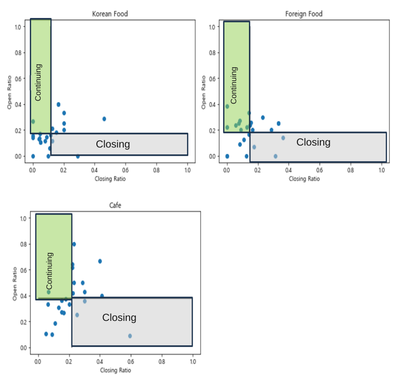

Defining closing and continuing commercial areas in Seongsu-dong
Seongsu-dong’s popularity did not explain why some commercial areas struggled while others remained active. Our team defined closing and continuing groups within industries with relatively frequent closures, then compared their sales, customer patterns, and accessibility to propose local policy directions.
- Comparison:
- Groups defined by industry-specific opening/closure rates and sales patterns
- Output:
- Local policy proposals; closure causes and policy effects were not established


Problem and context
Why distinguish closing and continuing areas?
Although Seongsu-dong attracts tourists and younger visitors, commercial activity is not equally stable everywhere. Closures can leave vacant premises and weaken the local economy. We needed to examine specific differences between areas where commercial activity was difficult to establish and those where it was relatively well established.
We first analyzed the closure distribution when choosing what to compare. Korean restaurants, foreign-cuisine restaurants, and cafes were selected from food/entertainment, where closures were comparatively active. Each industry’s opening and closure characteristics were considered separately.
Beyond predicting whether individual businesses would survive or close, the team aimed to compare spatial, population, and accessibility characteristics at commercial-area level and propose local policy directions. We defined closing and sustainable commercial areas as comparison groups. The report calls the latter continuing areas; an area is a group of selected analysis grids in the same industry.
We designed the groups before analyzing their sales structures and key-variable differences. Regression predicts daily sales; the closing/continuing distinction serves as a feature and comparison grouping.
My role
I participated in a team with Seung Yeon Tak and Hee Jun Lee, writing data preprocessing and analysis code. The project received an Excellence Award in the 2024 Seongdong-gu Big Data Fellowship.
Approach
1. Selecting industries from closure distributions
Industries were selected after examining closures in the data. After excluding 18 detailed categories that were difficult to compare, we organized 52 categories into four groups: food/entertainment, retail, services, and automotive. Seoul’s commercial-area analysis service and sources on Seongsu-dong’s distinctive industries also informed the categorization.
Business operating-status data showed comparatively active closures in food/entertainment. Other broad groups had no closures or cases concentrated in particular subcategories, limiting representativeness for broad-group comparisons. We narrowed the scope to food/entertainment and selected Korean restaurants, foreign-cuisine restaurants, and cafes.
Opening and closure distributions also differed among the three industries. Both rates tended to be lower for Korean restaurants, while cafes were relatively high on both. We therefore analyzed the industries separately and defined candidates relative to each industry’s mean.
2. Selecting spatial units suitable for sales comparisons
Seongsu-dong was divided into 250m × 250m grids, aligning sales, payment counts, and business operating status spatially. From 60 initial grids, we excluded locations where closure-related changes in transaction counts were unlikely to appear and locations with extremely low sales or payment counts, leaving 45 grids.
3. First-stage definition using opening and closure rates
Closure rates alone can miss the characteristics of industries with both frequent entry and frequent closure. Korean restaurants tended to have low opening and closure rates; cafes were high on both. We compared both measures relative to industry-specific means.
| Group | Closure rate | Opening rate |
|---|---|---|
| Closing candidate | Above the industry mean | Below the industry mean |
| Continuing candidate | Below the industry mean | Above the industry mean |
Grids not satisfying both conditions were excluded. First-stage closing/continuing counts were 3/2 for Korean restaurants, 3/8 for foreign-cuisine restaurants, and 3/1 for cafes. Rather than dividing all of Seongsu-dong into two groups, we selected representative grids with distinct comparison characteristics.

4. Second-stage review using sales patterns
Among first-stage candidates, we checked whether continuing areas showed relatively higher sales than closing areas. Applying this criterion yielded final closing/continuing grid counts of 2/2 for Korean restaurants, 1/2 for foreign-cuisine restaurants, and 2/1 for cafes. Selected grids of the same type and industry were grouped into comparison areas.
| Industry |
First-stage candidates
Closing / continuing |
Final selection
Closing / continuing |
|---|---|---|
| Korean restaurants | 3 / 2 | 2 / 2 |
| Foreign-cuisine restaurants | 3 / 8 | 1 / 2 |
| Cafes | 3 / 1 | 2 / 1 |
5. Checking group differences and statistical assumptions
Before examining sales differences, we checked normality using Kolmogorov–Smirnov tests and equal variance using Levene tests. Normality was not satisfied; equal variance was also not satisfied except for cafes. We considered both independent-sample t-tests and Wilcoxon rank-sum tests. Report Table 3 shows higher sales in continuing groups, with industry-wise differences significant at 0.05.
6. Linking spatial and temporal data to sales analysis
Card sales, floating population by age and gender, business information, public-transport accessibility, and weather were combined by grid and date. Training used 2023 and evaluation 2024. Standardization fitted on training data was also applied to evaluation data. Sales were transformed using log1p and evaluated after restoration to the original scale.
We compared Random Forest, XGBoost, and LightGBM and interpreted the selected industry-level sales models using SHAP. Mean SHAP differences between closing and continuing groups were examined alongside actual key-variable distributions to connect prediction contributions with customer ages, accessibility, and weekday/weekend sales patterns.
Scope
Different policy directions for different areas
High foot traffic alone did not establish high sales or commercial sustainability. We considered customer age composition, reliance on external visitors, public-transport accessibility, and weekday/weekend sales patterns. For example, cafes in office districts showed little weekend sales, constraining expected revenue. We proposed location-specific accessibility and pedestrian-environment improvements around schools, Ttukdo Market, and Atelier Street.
Interpreting selection criteria and results
The groups are selected cases based on openings, closures, and sales patterns. Sales differences also informed second-stage selection, so subsequent sales tests cannot be interpreted as generalization tests independent of selection. SHAP explains contributions to the sales prediction model; it does not establish causal drivers of business closures.
The scope covers sales structures, group differences in selected areas, and related policy proposals. It does not evaluate future closure probabilities throughout Seongsu-dong or the effects of implemented policies.